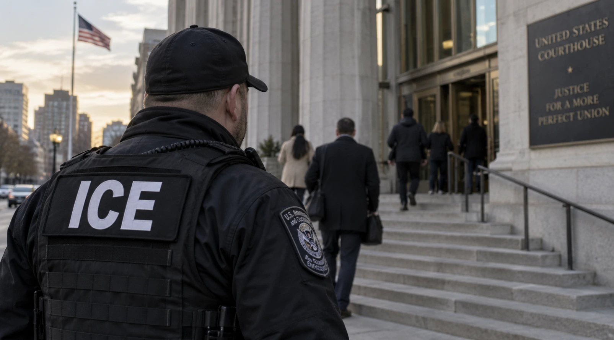

ICE Is Enforcing the Law. The Fight Is Over How Far Enforcement Should Go.
Federal law gives the government broad authority to remove many people living in the United States without legal status. It does not require the government to treat every removable person as an equal priority. That distinction now sits at the center of the immigration fight.


For much of the immigration debate, one sentence is treated as if it settles everything: They broke the law.
Sometimes they did.
Some immigrants entered the United States without authorization. Others entered legally and remained after their visas or other permission expired. Federal law gives the government authority to remove many people who have no legal right to remain.
The dispute begins with how broadly that authority should be used.
The administration has expanded immigration enforcement, arguing that previous policies effectively created a large population subject to removal under federal law but unlikely to face enforcement unless they committed another serious offense.
Supporters see that as a failure to enforce laws Congress already passed. A person does not acquire legal status simply by living peacefully in the country for years, holding a job or raising a family.
Critics make a different distinction.
Being unlawfully present in the United States is generally a civil immigration matter. It is not the same thing as being convicted of robbery, assault or another criminal offense.
Both people may be removable. That does not make the conduct identical.
Who becomes a priority
Previous administrations used enforcement priorities to concentrate federal resources on categories including national-security threats, serious offenders and recent border crossers. The current approach is broader: being legally removable may itself be enough to make someone an enforcement target.
That changes more than arrest numbers. It changes who must decide which cases matter most.
Supporters argue that immigration law means little if it is routinely enforced only after someone commits an unrelated crime. They also favor cooperation between local police and federal immigration authorities, particularly when ICE can take custody of a removable person already held in a local jail.
Critics argue that enforcement resources are finite. An officer arresting someone whose only issue is immigration status is not spending that time pursuing someone with a violent criminal history. Broader enforcement also brings long-settled families, workers and parents of American children into the same system.
Neither fact cancels the other.
Someone can have built a life in the United States and still lack legal permission to remain. The government can have authority to remove that person without being required to make that case its highest priority.
How much should local government help?
The same conflict now extends to state and local government.
Some jurisdictions cooperate closely with ICE. Others restrict local participation or limit what information state agencies provide to federal immigration authorities.
Supporters of cooperation argue that refusing assistance makes immigration enforcement less efficient and can force federal officers to make arrests in communities instead of controlled settings such as jails.
Opponents argue that making local police part of federal immigration enforcement can discourage immigrants from reporting crimes, appearing as witnesses or interacting with public agencies.
That is not primarily a disagreement about whether immigration law exists. It is a disagreement about who should help enforce it, against whom, and at what political cost.
The authority is broad. The choices are political.
Congress could answer many of those questions directly by rewriting the immigration system.
Instead, presidents change priorities. States cooperate or resist. Courts decide how much authority each side has. ICE operates inside the space left between them.
The result is an argument in which both sides can point to something true.
Federal law gives the government broad removal authority. The government still chooses how to use it.
The law determines who can be removed. Politics determines who becomes a priority.